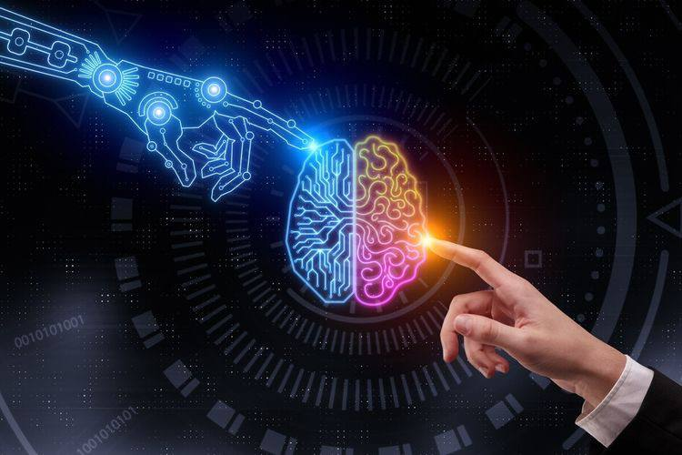
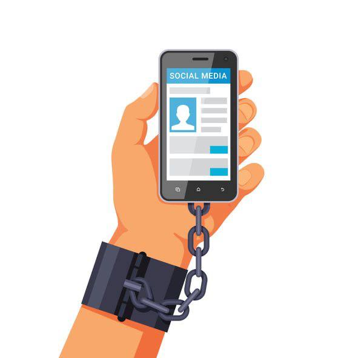
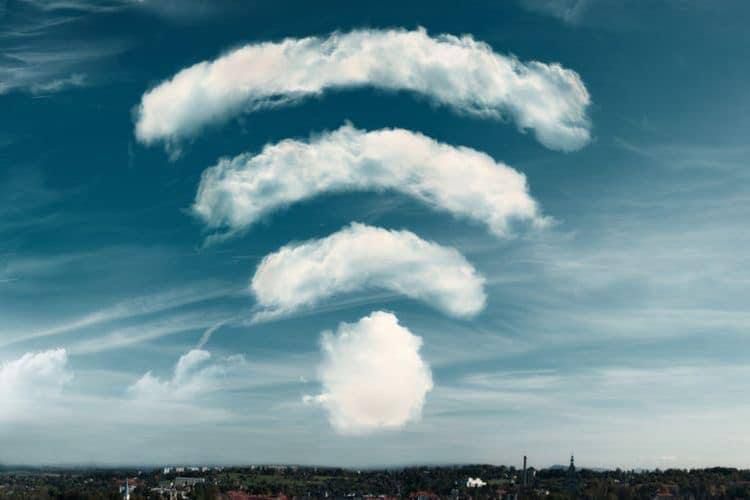

<div id="ajax-page" class="ajax-page-content">
    <div class="ajax-page-wrapper">
        <div class="ajax-page-nav">
            <!-- <div class="nav-item ajax-page-prev-next">
            </div> -->
            <div class="nav-item ajax-page-close-button">
                <a id="ajax-page-close-button" href="#"><i class="lnr lnr-cross"></i></a>
            </div>
        </div>

        <div class="ajax-page-title">
            <h1 style="float:right">S O C I A L - M E D I A (pt. 4)</h1>
            <br>
            <br>
            <p style="float: right;">META in general </p>
        </div>

        <div class="row life">
            <center>
                <div class="col-sm-8 col-md-8 portfolio-block " >
                    <div class="owl-carousel portfolio-page-carousel" style='width:100%;'>
                        <div class="item" style="display: flex; justify-content: space-between; width: 34%;">
                            
                            
                            
                        </div>
                    </div>

                    <!-- <div class="portfolio-page-video embed-responsive embed-responsive-16by9">
                    <iframe class="embed-responsive-item" src="https://www.youtube.com/embed/0pjhD5ySdPs"></iframe>
                </div> -->
                    <script type="text/javascript">
                        jQuery(document).ready(function ($) {
                            $('.portfolio-page-carousel').imagesLoaded(function () {
                                $('.portfolio-page-carousel').owlCarousel({
                                    smartSpeed: 1200,
                                    items: 1,
                                    loop: true,
                                    dots: true,
                                    nav: true,
                                    navText: false,
                                    margin: 10,
                                    autoHeight: true
                                });
                            });
                        });
                    </script>
                </div>
            </center>

            <div class="col-sm-12 col-md-12 portfolio-block conten">
                <!-- Project Description -->
                <div class="project-description">
                    <!-- <div class="block-title" style="float: right;">
                        <h3>التساؤل للوصول</h3>
                    </div> -->
                    <!-- <ul class="project-general-info">
                        <li>
                            <p><i class="fa fa-user"></i>mahmoud yousef</p>
                        </li>
                    </ul> -->

                    <center class="txt">
                        <span>
                            إتصالاً بمفهوم (السكون) فى الجزء السابق 
                            <br>
                            كتبت أنها حالة التوازن فى النفس 
                            <br>
                            التوازن عكس الإنفعال 
                            <br>
                            <br>
                            (- +)  الإنفعال ككل الأشياء له جانبه الإيجابى والسلبى 
                            <br>
                            تقدر تقول عليه (الدافع) أو (الحماس)
                            <br>
                            متحمس لفعل شئ سواء إيجابى أو سلبى 
                            <br>
                            فهو إما طاقة إيجابية (+) زيادة فى النفس 
                            <br>
                            بتؤدى لفقد الصواب فى أحيان ما إذا لم تكن 
                            <br>
                            تحت سيطرة العقل 
                            <br>
                            أو طاقة سلبية (-) زيادة بتؤدى للعدوانية 
                            <br>
                            <br>
                            فالنفس السوية بيبقى فيها الحماس 
                            <br>
                            تحت قيادة العقل 
                            <br>
                            مش الشهوة أو المتعة المؤقته المزيفة 
                            <br>
                            <br>
                            الصفحات الرئيسية Time line على مواقع التواصل 
                            <br>
                            مليئة بالمواقف والأحداث الحياتية للعالم كُله 
                            <br>
                            الذكاء الإصطناعى بيدخلك عالم جذاب 
                            <br>
                            لأنه بيشتغل على توفير ما يستهويك 
                            <br>
                            من خلال المعلومات التى استنبطها من تفاعلاتك السابقة
                            <br>
                            Scrolling حتى بالوقفات أثناء الـ  
                            <br>
                             users الخاصة بال  data الإتصالات بين المواقع وال+ 
                            <br>
                            <br>
                            بيشتغل على تكوين شهوة الإدمان للموقع أو الأبليكيشن 
                            <br>
                            فبينساق خلفه معظم المستخدمين 
                            <br>
                            لأن أكثر الناس فى الكوكب بعيدة عن العقلانية والتوازن
                            <br>
                            لدرجة أن اليد بتتحرك أوتوماتيكياً لفتح الأبليكيشن 
                            <br>
                            بلا غاية أو هدف 
                            <br>
                            فبيحصل أن معلومات ضخمة متضاربة بتنتقل للعقل فمبيقدرش يتعامل معاه فبيحدث الخلل النفسى 
                            <br>
                            وبالطبيعة بتنتقل التأثيرات فى الواقع الحياتى المادى 
                            <br>
                            فبتشوف شخصيات غريبة فاقدة صوابها .
                            <br>
                            <br>
                            فالذكاء الإططناعى حرفيا بيتغلب على البشر  
                            <br>
                            فى مرحلته الحالية اللى هى بلا شك إحترافية جداً  
                            <br>
                            بالنسبة لوعينا الحالى 
                            <br>
                            ولكنها جزء بسيط من التيار الضخم القادم 
                            <br>
                            وده اللى ناس كتيرة متخوفين منه 
                            <br>
                            ولذلك بيتكلموا باستمرار على قوانين صارمة تجاهه 
                            <br>
                            <br>
                            : فى الواقع الحياتى المادى 
                            <br>
                            الحاضر اللى بتعيشه الآن 
                            <br>
                            هو نتاج أفعالك أو تفاعلك السابق مع الحياة 
                            <br>
                            والمستقبل سيكون نتيجة تفاعلك مع الحاضر 
                            <br>
                            اللى بتعيشه الآن 
                            <br>
                            وده الذكاء الكونى (قوانين الخالق) 
                            <br>
                            Cosmic Intelligence 
                            <br>
                            Creator System 
                            <br>
                            بقانون الإحتمالات المطلقة 
                            <br>
                            <br>
                            ولذلك الإتصال بالخالق
                            <br>
                            بيبقى من خلال العلم 
                            <br>
                            ودرجة قوة الإتصال 
                            <br>
                            من درجة علمك  
                            <br>
                            <br>
                          : فالأساس فى كل شئ   
                            <br>
                            التركيز على النفس 
                            <br>
                            والتواصل معها فى أوقات مختلفة باستمرار 
                            <br>
                            بحالة من العقلانية 
                            <br>
                            لتنظيف الڤيروسات التى تخللتها 
                            <br>
                            وضبط البوصلة (التعديل) 
                            <br>
                            والتركيز على البرامج الإيجابية 
                            <br>
                            لإحداث الوصلات ليحدث التحديث (التطوير) 
                            <br>
                        </span>
                        <br>
                    </center>
                    <span
                        style="font-family: 'Shadows Into Light', cursive; float: right; border-bottom: 0.5px solid white;">Muhammad
                        B. Salama</span>
                    <br>
                </div>
                <!-- Project Description -->
            </div>
        </div>
    </div>
</div>